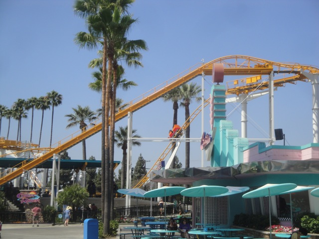
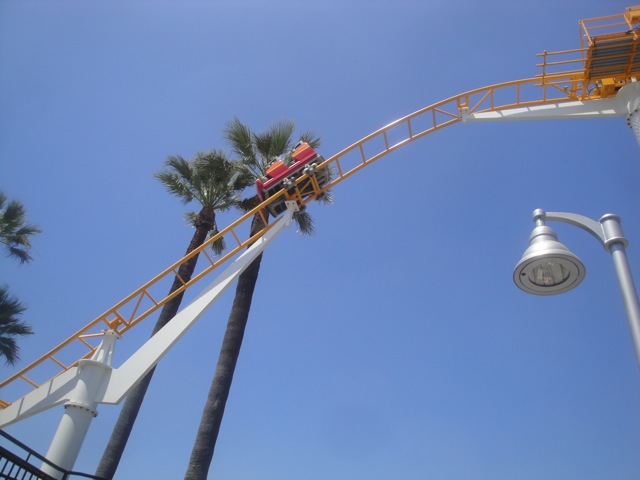
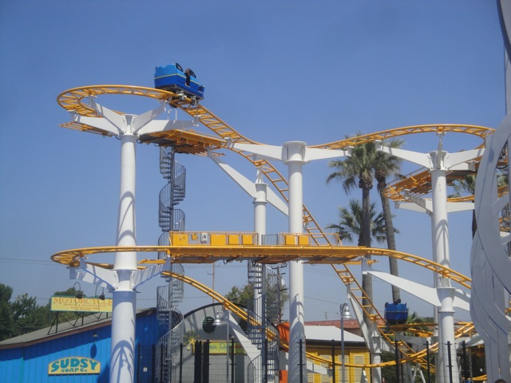
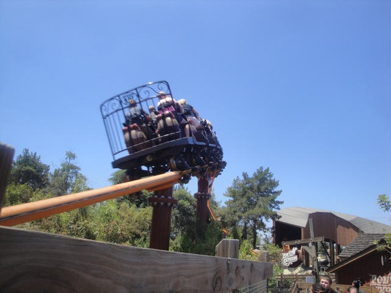
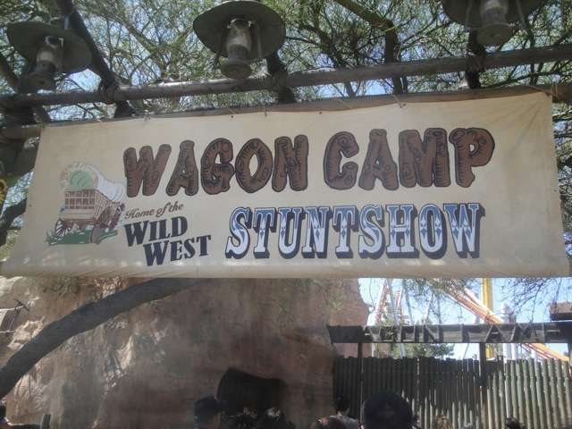
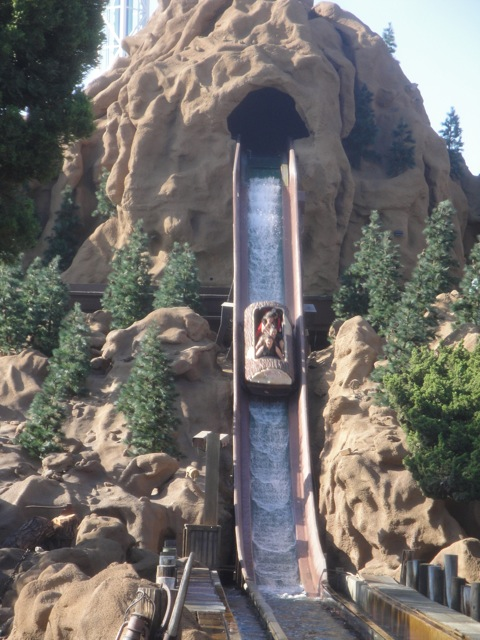
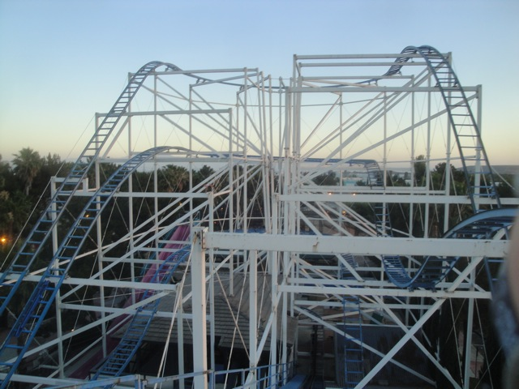
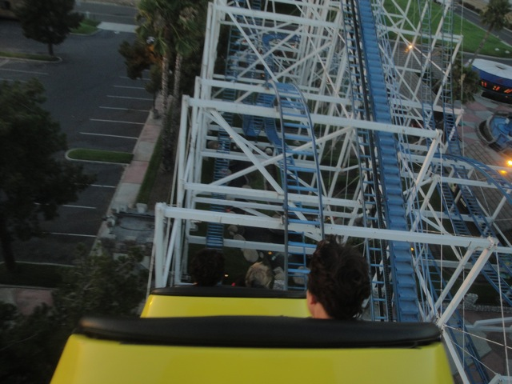
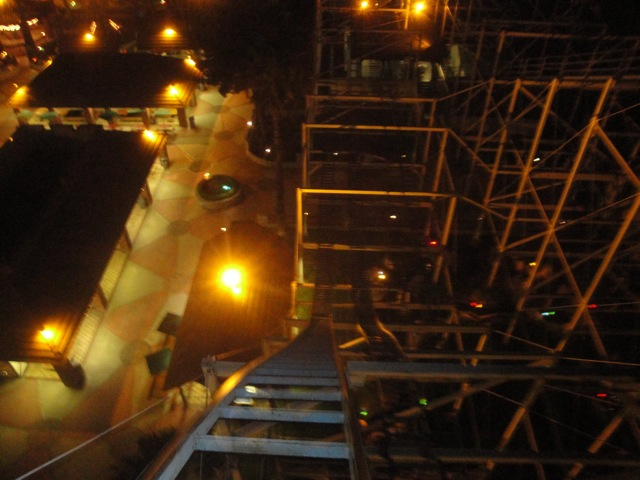

Knotts Summer 2013
All right. Its time for our first Knotts visit of 2013 and sadly, Montezooma's Revenge was down. Windseeker, don't care about that. But DAMMIT!!! NOT MONTEZOOMA!!!!
 This ride is awesome. Definetly one of the best in the country.
This ride is awesome. Definetly one of the best in the country.
But while Xcelerator is awesome, we're here to focus on other things since Knotts got for 2013.
For instance, they gave Timber Mtn Log Ride a makeover.
I'll just say this right now. The Timber Mtn Log Ride Makeover KICKED SOME SERIOUS ASS!!!!! I LOVED IT!!!! =D
But Knotts didn't just get a makeover for Timber Mtn Log Ride. They also completely re-did the Boardwalk and added three new rides.
First off, Knotts ended up getting Flyers!!!! Sweet!!! =)
Dude, these types of rides are completely awesome. Why don't more parks get Flyers?
Take note: When riding Flyers, be sure to ride sideways.
Oh hello Wilderness Scrambler. Good to see you again. Yeah, they just recycled Wilderness Scrambler and stuck it as one of the new rides. How many times has that Scrambler been moved now?
And finally, the third new ride is a brand spanking new Top Spin named Riptide. No, wait a minute...thats been there for a while. Dammit!!!! What's that third new Boardwalk ride!!? I forgot!!!
 Umm...well they repainted Boomerang. I like the look of it, but can you guys just repaint Boomerang to its original blue colors it had in the 90s? But hey. At least now it matches my work uniform. But what's that third ride dammit!!!?
Umm...well they repainted Boomerang. I like the look of it, but can you guys just repaint Boomerang to its original blue colors it had in the 90s? But hey. At least now it matches my work uniform. But what's that third ride dammit!!!?

Oh yeah. Knotts ended up getting a Wild Mouse.
 Nice name you gave your Wild Mouse. Its almost as good as your replacement name for Top Gun (Yes, I still call those rides Top Gun and No, I don't plan on adapting the (not new anymore) name anytime soon).
Nice name you gave your Wild Mouse. Its almost as good as your replacement name for Top Gun (Yes, I still call those rides Top Gun and No, I don't plan on adapting the (not new anymore) name anytime soon).
 Coast Rider is one of those big drop Wild Mouse.
Coast Rider is one of those big drop Wild Mouse.

I gotta be honest. I'm still kind of bitter about this ride replacing Perilous Plunge for this ride. And its not that they got rid of something intense for something family oriented, its that they got rid of something unique for something as common in theme parks as Starbucks is to the rest of the world. Plus, Perilous Plunge was not only awesome, but it also served as a crucial role that California DESPERATELY NEEDED and now California now lacks anything with Ejector Air. I don't want to have to either fly 1000 miles north to Vancouver to get my ejector air fix from Coaster or fly 3000 miles across the country to get it from El Toro. We need something like that here BADLY and Perilous Plunge was the closest thing we had and now its gone. I know that Knotts was aiming for the family market and wanted a family coaster. I understand, but I think something like this would've been better, or even better, something like this which is not only a family ride, but would also fill the airtime void in California.
 Now keep in mind, this is just me talking from a purely selfish point of view. I certainly want Knotts to be successful and if they're doing well with an ordinary "There's now 3 of these god damn things in Southern California now!!!" Wild Mouse, then I'm happy that others like it and that Knotts is doing well from it. I just want my ejector air back. Thats all.
Now keep in mind, this is just me talking from a purely selfish point of view. I certainly want Knotts to be successful and if they're doing well with an ordinary "There's now 3 of these god damn things in Southern California now!!!" Wild Mouse, then I'm happy that others like it and that Knotts is doing well from it. I just want my ejector air back. Thats all.

All in all, you're just another credit for my count.
Get out of my way!!! I know how to turn on Pumps. I'll have Bigfoot Rapids flowing in no time.

Considering that "PONY EXPRESS IS THE BEST RIDE EVER!!!!!!!", we had to give it a courtesy ride.
"ANYONE WHO DOESN'T LIKE THIS RIDE IS A PUSSY!!!!!"
Is it me or did Ghostrider seem fairly smooth today?
And of course, we had to eat Mrs. Knotts for lunch.
Mmm. Bacon Tile Strips. *drool*
Oh, and just so you know. Mrs. Knotts has a secret room that is still surviving from the 1930s.
You must beware of man, for he might lead you to the hell known as Mrs. Knotts Chicken Dinner Resteraunt.

Considering how many times I've been to Knotts and still haven't seen the Wagon Show, I decided to give it a watch.
Sweet!!! We got our own Stagecoach.
"What are you folks doing!!? You folks from the NSA working for the Obama Administration? Get the hell outta my here town!!!"
It was a fun show, but nothing mind blowing or amazingly spectacular.
Up next, Silver Bullet.
Silver Bullet from the Wagon Show.
This ride only gets better with age. =)

Considering how good the Timber Mtn Log Ride now is, we decided to get some more rides on it.
 SPLOOSH!!!!
SPLOOSH!!!!
WEE!!!! I'M GONNA MARATHON THIS THING!!!
Speaking of things I've never done at Knotts before, I've never done the Stagecoach before. So lets give that a whirl.
"Seriously? These are the people we're doing this for?"
It was fun, I just wish they allowed prefered seating.
I love this idea. I gotta get some of these and start branding my steaks.
You have to ask yourself "Do I feel lucky?" Do ya punk?
Good job dipsh*ts. You just revealed the location of Springfield.
Somewhere out there, the NRA/Gun Manufacters (same thing really) are losing their sh*t over this since fake guns don't turn a profit for them.
Because even though you're an adult, we don't trust you until you reach this arbitrary age. Welcome to America. =)
 Quit ruining my fun!!! ='(
Quit ruining my fun!!! ='(
You clearly haven't met Cliff yet.
Keep pumping William. You gotta pay off your park ticket somehow.
After our fun at Knotts, we decided to go out and have some fun. So why not take a last minute trip to Scandia!!! =)
 And of course, we came here for one reason.
And of course, we came here for one reason.

MORE RIDES ON THE SCANDIA SCREAMER!!!! YAY!!!! =)

Can I just remind you again that this is one of the most underrated coasters ever?
"How can a ride so small be so powerful?"
Hey look Knotts!! We don't have to pay for this Screamin Swing. =)
 Oh crap. All the creepy coaster people are back to try and destroy the Little Dipper lift hill motor.
Oh crap. All the creepy coaster people are back to try and destroy the Little Dipper lift hill motor.
And of course, we have to ride the drop tower themed to us while we're here.
 New for Cliff Jumper this year. Seat belts!!! Best 2013 addition ever!!!! =)
New for Cliff Jumper this year. Seat belts!!! Best 2013 addition ever!!!! =)
 Scandia Screamer from Cliff Jumper.
Scandia Screamer from Cliff Jumper.
Heu, it may not be nearly as pants-sh*tting terrifying as jumping the 70 ftr, but its still a lot of fun.
WEE!!! CLIFF JUMP!!!!
Hell Yes!!! We're gonna have another Gravitron Party!!! =)
 Eh, this year, they're playing the Backstreet Boys. Not my favorite band, but whatever. They're no Smash Mouth, but they're tolerable.
Eh, this year, they're playing the Backstreet Boys. Not my favorite band, but whatever. They're no Smash Mouth, but they're tolerable.
OH DEAR GOD!!! They switched artists and are now playing *gasp* One Direction *barfs all over the Gravitron* !!!!! GET ME OUT OF HERE!!! GET ME OUT!!!! THIS IS TORTURE!!!! Backstreet Boys were fine, THIS IS THE ABSOLUTE WORST!!!! THE LOWEST OF THE LOWEST!!! THE BOTTOM OF THE CRAPPY TODAY MUSIC TOTEM POLE (And thats saying a lot)!!!!!! Seriously, with the exception of a certain Eunuch from Canada whom I don't want to name because naming him will contribute to his non-deserving fame, they are the absolute WORST group I have ever heard. In fact, I'm gonna go download some Backstreet Boys music now because I suddenly really appreciate and like them now when forced to compare them to this aborted atrocity of perverted sound pollution.
Ah Crap!!! Scandia Screamer is gonna kick my ass!!!

Yep, Scandia Screamer kicked my ass and I loved it. If you live in Southern California and haven't ridden this, RIDE IT NOW!!! This was my 3rd visit to Scandia just to ride this thing and I know I'll be doing a 4th visit sometime soon. =)
Home